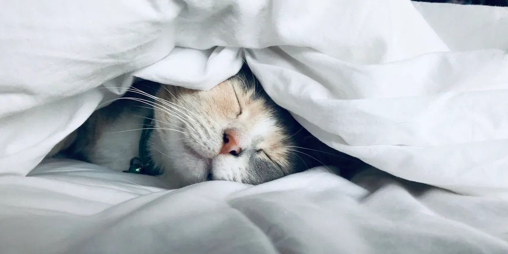
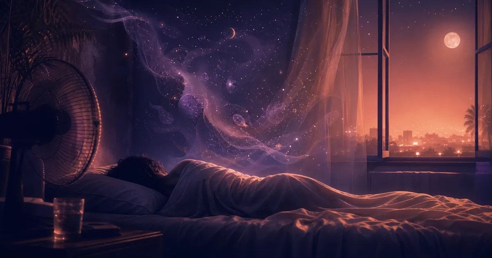
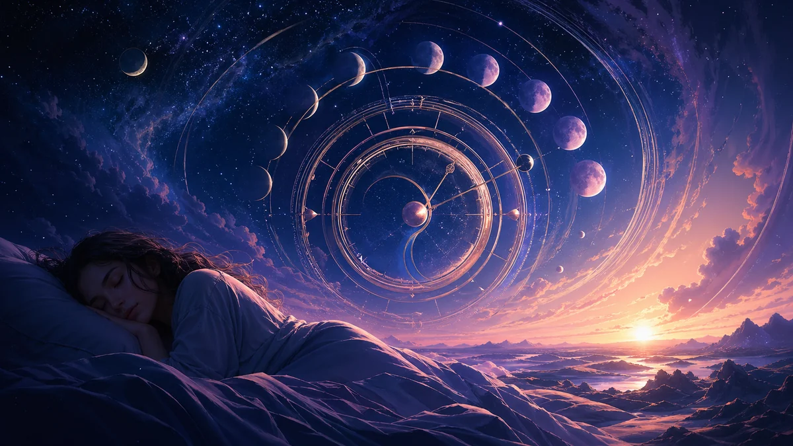
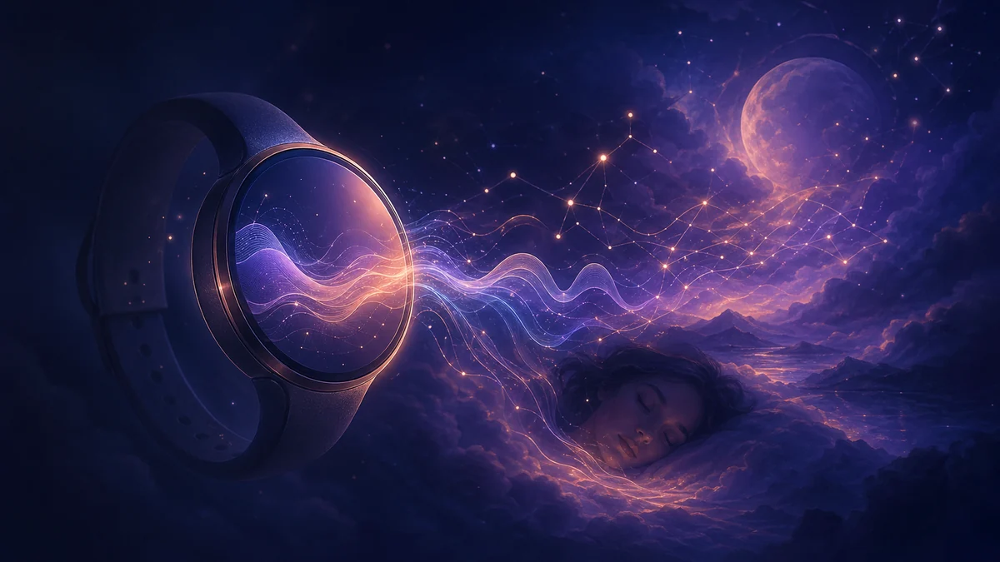

Guía de temporada · 5 min
Soñar con un examen en época de finales
Interpreta sueños de examen, no haber estudiado, aprobar, reprobar y sentirte evaluado.
Noctalia Recursos
Guías prácticas para registrar, comprender y analizar los sueños que vuelven por la noche.
Sigue un recorrido centrado en el recuerdo de los sueños, sus significados o la práctica de los sueños lúcidos.
Las guías que ayudan más rápido a registrar, recuperar e interpretar tus sueños.
Interpreta sueños de examen, no haber estudiado, aprobar, reprobar y sentirte evaluado.




Guías prácticas, ciencia del sueño y símbolos oníricos organizados en una grilla bento legible.
Dos accesos rápidos para entender mejor qué significa volar en sueños.

Por qué las noches calurosas fragmentan el sueño y cambian la forma de recordar los sueños.

Por qué cama nueva, calor y horarios cambiados hacen que recuerdes más sueños.
Ruido de calle, vecinos, hotel o aire acondicionado: cómo los microdespertares cambian el recuerdo de los sueños y qué anotar al despertar.
Por qué despertarse de noche puede mejorar el recuerdo de sueños, qué anotar en los primeros 90 segundos y cuándo priorizar dormir.
Por qué una noche calurosa o tensa vuelve una pesadilla más presente y qué ayuda sin sobreinterpretarla.
Qué revisar antes de confiar tus sueños a un diario con IA.
Un estudio de Cell Reports muestra que algunos estados parecidos al sueño surgen durante la vigilia.

Un modelo de Communications Biology explora por qué algunos sueños se recuerdan como si fueran reales.
Un estudio reciente muestra cómo los sueños transforman vida diaria, personalidad y contexto emocional.
Una investigación reciente sugiere que los sueños inmersivos pueden hacer que el sueño se perciba como más profundo.
Una guía de temporada para interpretar sueños de examen durante época de finales.
Descubre los mecanismos cerebrales y neuroquímicos que explican por qué olvidamos el 95% de nuestros sueños.
¿Por qué sigues teniendo el mismo sueño? Descubre lo que tu subconsciente está tratando de decirte.
Aprende las técnicas básicas para ser consciente en tus sueños y explorar mundos infinitos.

¿Por qué sueñas que pierdes los dientes? Descubre las 7 interpretaciones más comunes.

¿Por qué sueñas con caer al vacío? Descubre el significado psicológico.

¿Por qué sueñas con volar? Descubre lo que los sueños de volar revelan sobre la libertad y la ambición.

Explora 150 símbolos oníricos como puntos de partida contextuales para la reflexión.

Descubre el poderoso simbolismo de los sueños con serpientes y lo que revelan sobre transformación, miedo y sabiduria oculta.

Aprende el arte antiguo de la incubación onírica para resolver problemas y estimular tu creatividad.

Explora la fascinante ciencia de los sueños premonitorios y si realmente pueden predecir el futuro.

¿Por qué sueñas que te persiguen? Descubre los significados psicológicos detrás de los sueños de persecución y lo que tu subconsciente intenta decirte sobre el miedo y la evitación.

¿Qué significa soñar con la muerte? Descubre los significados simbólicos detrás de los sueños de muerte - raramente predicen la muerte real y a menudo representan transformación y cambio.

¿Qué significan los sueños de agua? Descubre las interpretaciones simbólicas de los sueños de ahogarse, océano e inundación. El agua representa las emociones - aprende lo que tu subconsciente te está diciendo.

¿Por qué sigues soñando con tu ex? Descubre los significados psicológicos de los sueños con exparejas y lo que tu subconsciente está procesando.

¿Qué significan los sueños de embarazo? Descubre por qué sueñas con estar embarazada, dar a luz o bebés - incluso si no estás esperando. Significados simbólicos explicados.

¿Por qué tenemos pesadillas? Descubre las causas de los malos sueños, su significado y técnicas probadas para reducir su frecuencia y dormir mejor.

Guía completa para entender la parálisis del sueño. Descubre qué la causa, por qué ocurren las alucinaciones y qué técnicas ayudan para prevenir y detener los episodios.
Aprende a llevar un diario de sueños efectivo. Descubre técnicas probadas para mejorar tu memoria onírica, qué escribir y cómo el diario transforma tu sueño.

Descubre la profunda conexión entre los sueños y la salud mental. Aprende cómo la ansiedad, la depresión y el trauma afectan tus sueños, y cómo el trabajo con sueños puede apoyar la sanación.

Explora la fascinante ciencia de los sueños. Aprende sobre las teorías principales, la actividad cerebral durante los sueños y lo que revelan sobre la consciencia.
Descubre la ciencia del sueño REM y su papel crucial en los sueños. Aprende sobre los ciclos de sueño, diferencias REM vs no-REM, y cómo optimizar tu sueño REM.

Explora la fascinante evolución de la interpretación de sueños desde las civilizaciones antiguas hasta la neurociencia moderna. Descubre cómo las culturas de todo el mundo han decodificado el lenguaje de los sueños.

Comprende por qué sueñas con el trabajo, la ciencia detrás de los sueños de estrés laboral y estrategias probadas para recuperar tus noches.

Descubre cómo los sueños impulsan la creatividad y la resolución de problemas. Conoce descubrimientos famosos nacidos en sueños y técnicas para aprovechar tu mente dormida.
Comprende por qué ocurren los sueños de ansiedad, qué significan los escenarios comunes y técnicas respaldadas por la ciencia para reducir los sueños ansiosos.

Comprende de qué sueñan los niños a cada edad, por qué tienen pesadillas y cómo los padres pueden ayudarles a desarrollar una relación saludable con los sueños.
Luz, ruido, temperatura: descubre cómo tu entorno de sueño moldea directamente el contenido y la calidad de tus sueños.
Stanford publica SleepFM, una IA capaz de predecir Parkinson y cánceres a partir de una sola noche de sueño.

El estudio Northwestern 2026 muestra que la TMR puede orientar tus sueños hacia problemas específicos, duplicando la tasa de resolución.

Cómo el paso al horario de verano altera tu ritmo circadiano, comprime el sueño REM y transforma tu vida onírica.

Cómo la deuda de sueño acumulada deteriora tu salud, transforma tus sueños por el rebote REM y qué dice la ciencia sobre la recuperación.

Cómo el equinoccio de primavera y los días más largos suprimen la melatonina y alteran tus sueños.

Un estudio OHSU revela que la falta de sueño supera a la mala alimentación y la falta de ejercicio para la esperanza de vida.

El 40 % de las personas monitorean su sueño semanalmente. Descubre qué miden realmente los rastreadores y por qué el diario de sueños completa el panorama.
Noctalia transforma tus historias de sueños en conocimientos personalizados. Captura tus sueños por voz y descubre su significado.
Descubre NoctaliaNuevos artículos, guías exclusivas y consejos para entender mejor tus noches. Únete a nuestra comunidad de soñadores.
Únete a la Lista de Espera